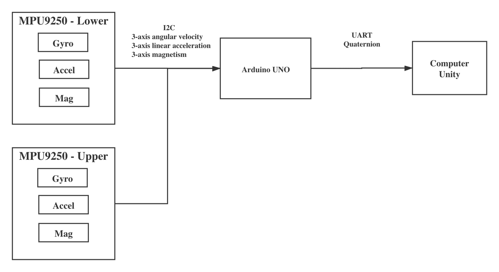
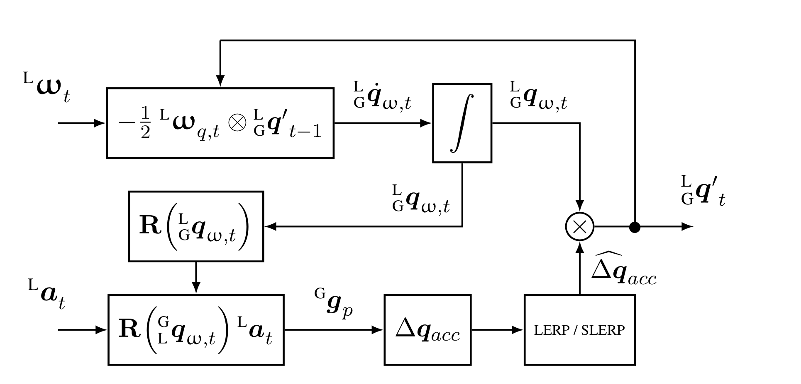
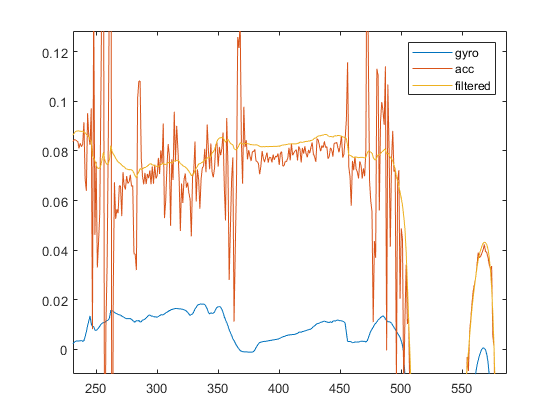
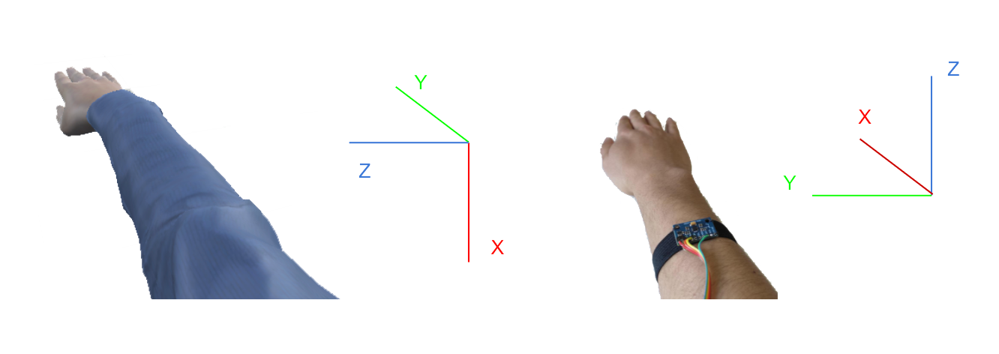

IMU-based Motion Capture System
Using two IMUs to capture the motion of upper limb
Video
Block diagram

Orientation Filter - Complementary filter

(source:
Keeping a Good Attitude: A Quaternion-Based Orientation Filter for IMUs and MARGs
)

Hardware Setup and Coordinates
